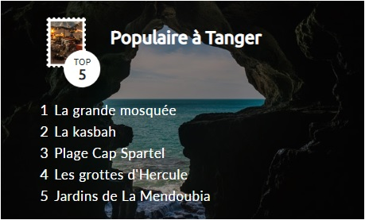

Tanger


Tanger, une ville cosmopolite ! Tout au nord du Maroc, la ville de Tanger invite les voyageurs. Sur ses côtes où convergent les eaux méditerranéennes et atlantiques, vous découvrez une ville authentique bercée d'influences variées. plus
La colombe blanche Une ambiance similaire règne à Tétouan. Elle est "la fille de Grenade", une ville à l'architecture hispano-mauresque. Sa médina est inscrite en tant que patrimoine mondial de l'humanité par l'UNESCO. plus
Chefchaouen, un rêve bleu. Chefchaouen est une ville avec un cachet bien particulier, en plus d'être bâtie à flanc de montagne. Mais si elle fascine tant les voyageurs, c'est qu'elle dégage une impression d'irréel. Les façades de ses maisons sont teintes de bleu et de blanc, toute la ville semble baignée d'azur.... plus